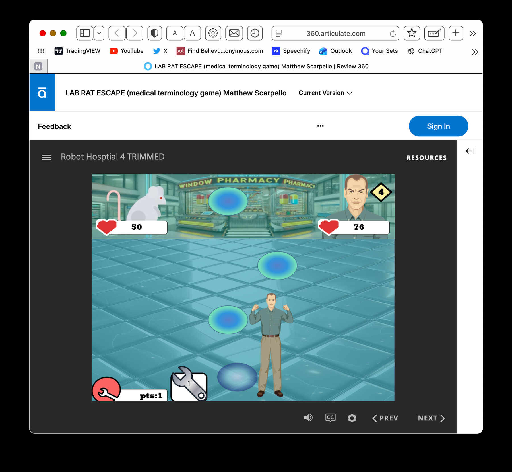

Media and design
Turning material into scenes, visuals, and interactions that a learner can follow.
See an animation sample ↗University of Nebraska Medical Center / E-Learning Internship
At UNMC, I helped turn medical and scientific subjects into visual, interactive learning experiences. My work combined animation, instructional media, technical problem-solving, and collaboration.

The order changes each visit. Hover, focus, or tap a frame to jump to its original image below.
01 / THE PURPOSE
Educational media has to do more than look appealing. It has to help someone recognize a concept, follow an explanation, or practice what they have learned.
Working on health-science learning materials introduced me to the challenge of communicating precise information in an accessible format. The examples here show different approaches: animated explanations, visual demonstrations, and interactive terminology practice.
02 / MY WORK
Four examples of the media and design problems I worked around. Each image links to an original project sample.
Instructional animation combines scene design, pacing, and narration-friendly visual elements to communicate information clearly.
View the original animation still ↗
Health-related instructional scenes need to make a complicated idea easier to follow without losing its educational purpose.
View the scene ↗
Labels, visual emphasis, and sequence can help learners recognize anatomical information and reduce unnecessary visual complexity.
View the medical illustration ↗
Game-based activities bring together questions, feedback, and interaction, showing how learning experiences can respond to a student's choices.
View the question interface ↗03 / FEATURED TECHNICAL PROJECT
An interactive medical-terminology game that helped introduce me to object-based programming, named elements, feedback, and game-state design. The published HTML5 experience can be played directly in your browser.

OPEN THE INTERACTIVE GAME ↗04 / PEOPLE & PROCESS
Each sample is part of a larger educational effort. I want this section to show the different perspectives involved, rather than imply these were solo projects.
Turning material into scenes, visuals, and interactions that a learner can follow.
See an animation sample ↗Connecting the intended learning objective with content review and clear explanations.
About UNMC Interactive E-Learning ↗Thinking through how an instructional idea functions in a real media or interactive workflow.
UNMC E-Learning team context ↗The official UNMC links provide institutional context, not a roster of colleagues personally credited here. Individual collaborators and their contributions can be included once those details are confirmed.
05 / ORIGINAL EVIDENCE
Six original screenshots. Select an image to enlarge it, or use the moving storyboard to jump to a specific sample.
06 / REFLECTION
Visual communication is a practical skill. An instructional animation or interface is only useful when people can follow the idea it is meant to teach.
Technology and education shape each other. Interactive media asks you to think about both how a system responds and what a person learns from that response.
Feedback is part of the work. Collaborating on educational materials means staying open to revisions that make the result clearer for the intended audience.